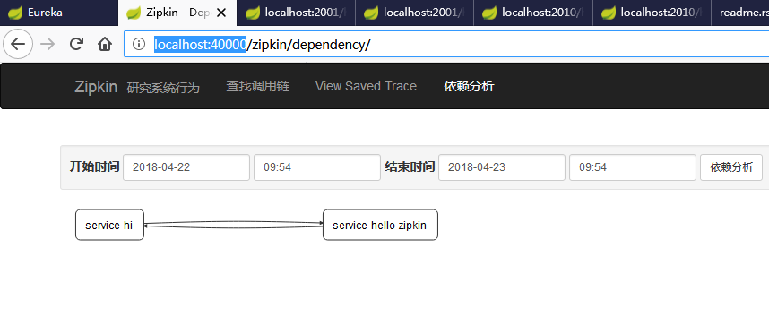

项目简介¶
- 简介
- 概括springcloud各组件功能
- 环境信息
- springboot 1.5.10
- springcloud Edgware.SR2
项目代码
注册中心 与 服务提供者¶
搭建步骤详见 服务注册中心高可用环境搭建
搭建步骤详见 服务注册中心高可用环境搭建2
搭建步骤详见 服务注册中心高可用环境搭建3
搭建步骤详见 服务注册中心高可用环境搭建4
服务消费者 rest+ribbon¶
客户端负载均衡
配置中心服务端 config-server¶
配置中心客户端 config-client¶
网关服务 zuul-service¶
消息总线 spring cloud bus¶
改造 config-client
- pom.xml 中增加依赖
<dependency>
<groupId>org.springframework.cloud</groupId>
<artifactId>spring-cloud-starter-bus-amqp</artifactId>
</dependency>
- controller 类上增加注解
@RefreshScope
没有验证在启动类上增加该注解是否管用
- 修改配置文件
bootstrap.yml 配置如下
spring:
cloud:
config:
profile: dev
label: master
name: config-client
discovery:
enabled: true
serviceId: config-server
bus:
trace:
enabled: true
eureka:
client:
serviceUrl:
defaultZone: http://localhost:8889/eureka
application.yml 配置如下
spring:
application:
name: config-client
rabbitmq:
host: localhost
port: 5672
username: guest
password: guest
management:
security:
enabled: false
server:
port: 9010
服务链路追踪 sleuth zipkin¶
- 新建工程 zipkin-server
- 入口方法增加注解 @EnableZipkinServer
- pom.xml增加依赖如下
<dependencies>
<dependency>
<groupId>org.springframework.boot</groupId>
<artifactId>spring-boot-starter-web</artifactId>
</dependency>
<dependency>
<groupId>org.springframework.cloud</groupId>
<artifactId>spring-cloud-starter-eureka</artifactId>
</dependency>
<dependency>
<groupId>org.springframework.cloud</groupId>
<artifactId>spring-cloud-starter-eureka</artifactId>
</dependency>
<dependency>
<groupId>io.zipkin.java</groupId>
<artifactId>zipkin-server</artifactId>
</dependency>
<dependency>
<groupId>io.zipkin.java</groupId>
<artifactId>zipkin-autoconfigure-ui</artifactId>
</dependency>
<dependency>
<groupId>org.springframework.boot</groupId>
<artifactId>spring-boot-starter-test</artifactId>
<scope>test</scope>
</dependency>
</dependencies>
- 配置文件applicatioin.yml如下
server:
port: 40000
详见工程
- 新建工程 service-called
- 配置文件 application.yml如下
server:
port: 2010
spring:
application:
name: service-hello-zipkin
zipkin:
base-url: http://localhost:40000
eureka:
client:
serviceUrl:
defaultZone: http://localhost:8889/eureka/
- pom.xml文件如下
<dependencies>
<dependency>
<groupId>org.springframework.boot</groupId>
<artifactId>spring-boot-starter-web</artifactId>
</dependency>
<dependency>
<groupId>org.springframework.cloud</groupId>
<artifactId>spring-cloud-starter-zipkin</artifactId>
</dependency>
<dependency>
<groupId>org.springframework.cloud</groupId>
<artifactId>spring-cloud-starter-eureka</artifactId>
</dependency>
<dependency>
<groupId>org.springframework.boot</groupId>
<artifactId>spring-boot-starter-test</artifactId>
<scope>test</scope>
</dependency>
</dependencies>
controller调用eureka-client服务
详见工程
使用原工程 eureka-client
配置步骤同 sercice-called
依次启动 eureka-server -> zipkin-server -> eureka-client -> service-called
查看 zipkin 监控页面 http://localhost:40000
启动顺序¶
- eureka-server 查看注册中心是否启动 localhost:8889
- eureka-client 查看注册中心是否注册有该服务，访问服务 http://localhost:2001/hello/sayhello?name=wenchaofu
- ribbon-service 查看注册中心首付注册有该服务，访问服务 http://localhost:20000/hi?name=wenchao
- zuul-service 查看注册中心首付注册有该服务，访问服务 http://localhost:30000/api-a/hi?name=forezp&token=22
- config-server 查看注册中心首付注册有该服务，使用git
- config-service 查看注册中心首付注册有该服务，http://localhost:9010/hi?name=wenchaofu
- spring cloud bus 改造config-client 增加依赖 spring-cloud-starter-bus-amqp 。安装好rabbitMq并启动 修改git 中的配置文件，刷新 http://localhost:9010/bus/refresh